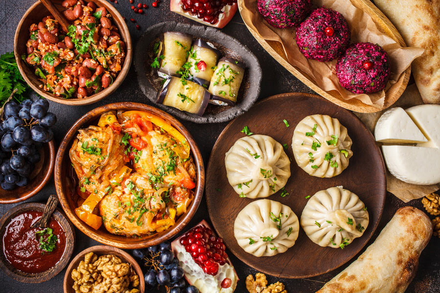
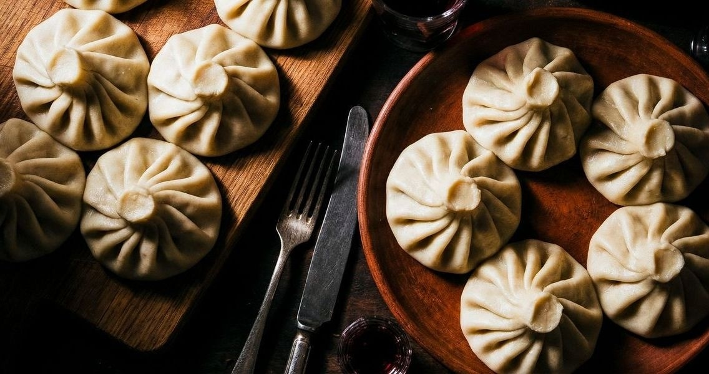
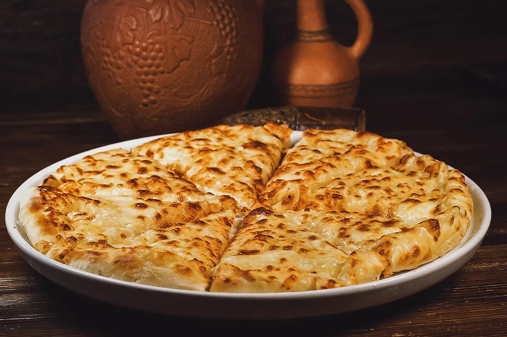
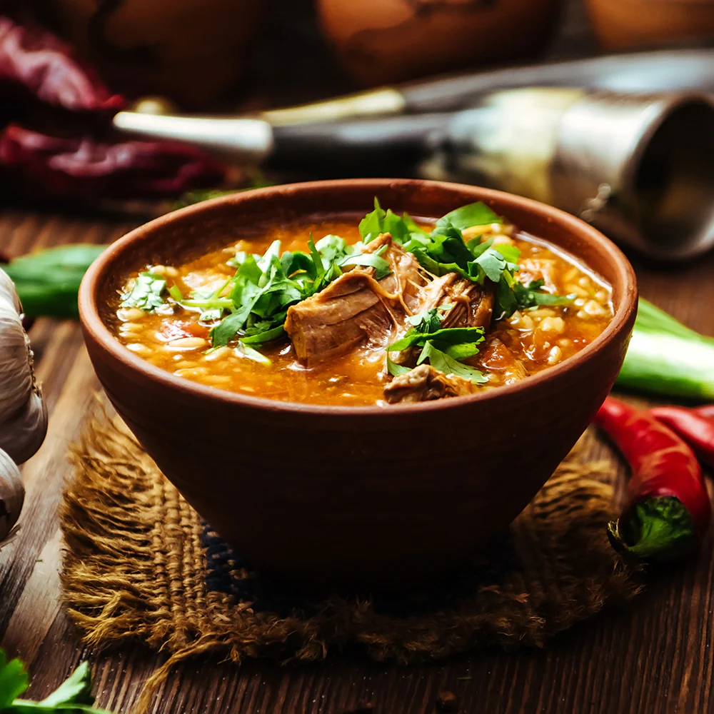
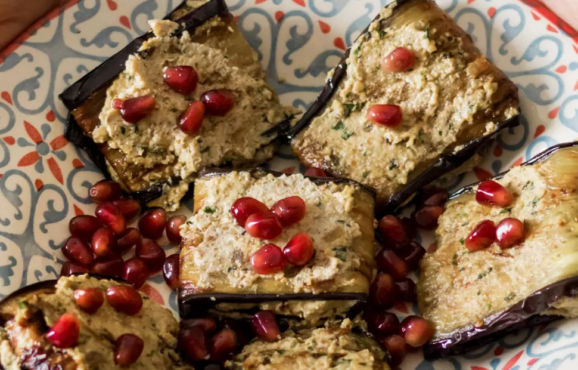

Georgia is
Where tradition meets flavor
Georgian cuisine is much more than delicious food—it's a reflection of our history, culture, and hospitality. Every dish has its own story, and every meal is meant to be shared with family and friends. Here you'll discover some of the most interesting facts, traditional dishes, and unique flavors that make Georgian cuisine so special.
One of Georgia's greatest treasures is its wine. With over 8,000 years of winemaking history, Georgia is widely recognized as one of the oldest wine-producing countries in the world. Cheese is another essential part of Georgian cuisine. There are dozens of regional varieties, each with its own unique flavor and texture.
Some
Traditional Georgian dishes

Khinkali
Khinkali is a traditional dumpling filled with juicy minced meat, herbs, and aromatic spices. The filling releases a flavorful broth as it cooks, making each dumpling rich and satisfying. They are traditionally eaten by hand by holding the twisted top, taking a small bite to sip the broth first.
Ingredients:
Ground beef and pork (or lamb), onions, garlic, fresh coriander, black pepper, cumin, flour, water, and salt.
Learn more
Khachapuri
Khachapuri is a traditional Georgian cheese-filled bread that comes in several regional varieties, each with its own unique shape and filling. The dough is soft and fluffy, while the melted cheese creates a rich, savory center. The famous Adjarian version is shaped like a boat and topped with a fresh egg and butter.
Ingredients:
Bread dough, Imeruli or Sulguni cheese, butter, and egg (for Adjarian khachapuri).
Learn more
Kharcho
Kharcho is traditional soup made with beef, walnuts, and rice, all simmered in a rich, spiced broth. It is well-known for its deep flavor, which balances a gentle heat from warming spices with a distinct tartness from sour plum purée, and is typically topped with fresh cilantro.
Ingredients:
Beef, rice, onions, tomato paste, walnuts, garlic, coriander, blue fenugreek, khmeli-suneli spice blend, and fresh herbs.
Learn more
Badrijani nigvzit
Nigvziani badrijani is a Georgian classic appetizer consisting of thin slices of fried or roasted eggplant wrapped around a rich, garlicky walnut paste. It features a flavorful contrast between the tender, savory eggplant and the nutty, slightly tangy, and spiced filling.
Ingredients:
Eggplant, walnuts, garlic, coriander, blue fenugreek, vinegar, pomegranate seeds, and fresh herbs.
Learn more